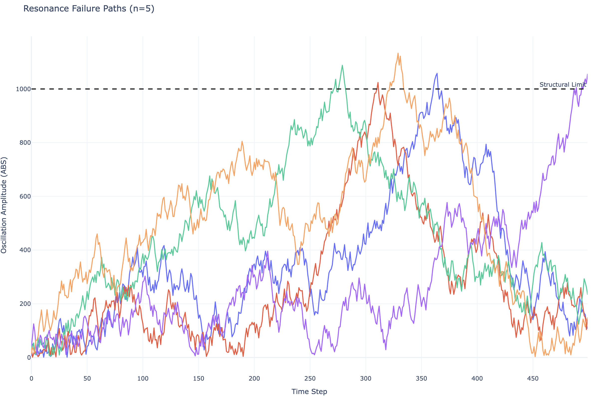

Bridge Resonance
Key Learning:
- High-speed Monte Carlo discovery
- Performance via early-exit pruning
- Deterministic parallelism
The Problem
In structural engineering, certain wind patterns can cause a bridge to vibrate at its natural frequency, leading to catastrophic aeroelastic flutter. How likely is it for a suspension bridge to encounter a sequence of wind gusts that trigger a structural failure?
Specifications:
- Wind gust force range: -50 to 50 kN
- Critical oscillation threshold: 1000 units of displacement
- Simulation duration: 500 time steps
Solving the Problem
Simulation Core
Each sprout represents a unique weather sequence over the bridge. The plant method simulates cumulative oscillation. If the resonance exceeds the structural limits of the bridge, we record the failure. We use a setup method to bypass the Rust-to-Python init limitation, ensuring our physical constants are correctly stored on the Planter instance.
from seedler import *
import pandas as pd
import plotly.express as px
FAILURE_POINT = 1
class BridgePlanter(Planter):
def setup(self, damping_factor, gust_sensitivity, duration):
self.damping = damping_factor
self.sensitivity = gust_sensitivity
self.duration = duration
return self
def plant(self, sprout: Sprout):
oscillation = 0.0
max_oscillation = 0.0
for _ in range(self.duration):
# Simulate random wind gust
gust = sprout.growth(-100, 100) / 100.0
force = gust * self.sensitivity
# Update physical state with damping
oscillation = (oscillation + force) * self.damping
if abs(oscillation) > max_oscillation:
max_oscillation = abs(oscillation)
sprout.add_bud(FAILURE_POINT, int(max_oscillation))
def plant_verbose(self, sprout: Sprout):
oscillation = 0.0
for step in range(self.duration):
gust = sprout.growth(-100, 100) / 100.0
force = gust * self.sensitivity
oscillation = (oscillation + force) * self.damping
sprout.add_bud(step, abs(int(oscillation)))
Filtering
To optimize the search for catastrophic failures, we implement a Fire class. This allows the simulation to "purge" any weather pattern that does not reach the critical threshold of 1000 oscillation units. This early-exit pruning ensures compute resources are dedicated only to discovering "Black Swan" structural failures.
class FindCollapse(Fire):
def __init__(self, threshold=1000):
self.threshold = threshold
def purge(self, sprout: Sprout):
# Discard seeds that stay below the collapse threshold
return sprout.get_bud_count(FAILURE_POINT) < self.threshold
Running the Simulation
By running 1,000,000 simulations, we can determine the empirical probability of a resonance collapse under the defined environmental conditions.
sims = 1_000_000
lab = BridgePlanter().setup(damping_factor=0.99, gust_sensitivity=50.0, duration=500)
failures = lab.find_seeds(fire=FindCollapse(1000), maximum=sims)
failure_rate = len(failures) / sims * 100
print(f"Collapses (threshold 1000): {failure_rate:>6.3f}% ({len(failures)}/{sims})")
Output
The data suggests that while rare, specific wind sequences can overcome the bridge damping system to cause a total collapse.
Plotting Resonance Paths
Visualizing the failure paths allows engineers to see whether collapses are caused by a single massive gust or a specific rhythmic sequence of smaller gusts. We re-simulate the failure seeds using plant_verbose.
if len(failures) == 0: quit()
target_seeds = [f[0] for f in failures[:2]]
all_paths = []
for seed_id in target_seeds:
sprout = Sprout(seed_id)
lab.plant_verbose(sprout)
temp_df = pd.DataFrame(sprout.to_dict().items(), columns=['step', 'amplitude'])
temp_df['seed'] = str(seed_id)
all_paths.append(temp_df)
df_master = pd.concat(all_paths).sort_values(by=['seed', 'step']).reset_index(drop=True)

fig = px.line(
df_master,
x="step",
y="amplitude",
color="seed",
title=f"Resonance Failure Paths (n={len(target_seeds)})",
template="plotly_white",
render_mode="webgl"
)
fig.add_hline(
y=1000.0,
line_dash="dash",
line_color="black",
annotation_text="Structural Limit"
)
fig.update_layout(
hovermode="closest",
showlegend=False,
yaxis_title="Oscillation Amplitude (ABS)",
xaxis_title="Time Step"
)
fig.show()
The visualization confirms that failures occur when the bridge enters a feedback loop where wind forces consistently align with the existing momentum of the structure.
Answering the Problem
Based on the 1,000,000 simulated iterations, a suspension bridge with these specific damping properties has a 0.001% probability of encountering a fatal resonance event during a standard wind cycle.